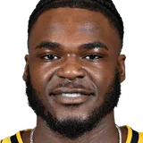

His teams reached the NBA Finals once (2024-25) without winning the title. In his 713 games for 2 teams over 11 seasons they went 378–335 (53.0%), +43 games over .500, with an average final finish of 13.5. The biggest one-season rise in his career: the Indiana Pacers went from #23 in 2022-23 to #4 in 2023-24.
Final NBA finish, season by season
Title Finals Other playoffs Missed. #1 = champion; the dashed line is last place that season. Each point opens that season's final standings.
All 30 teams ranked in 2024-25, his best finish (#2)Teammate help
Most of it came from
- Tyrese Haliburton 6.0 points over 3 seasons
- Victor Oladipo 5.2 points over 2 seasons
- Paul George 4.5 points over 2 seasons
In his 5 seasons with help between 0.8 and 1.2 points, his best final finish was #9 of 30 (2019-20) and his worst #23 of 30 (2022-23).
Help by season · Compare with a peer · How help and peers work
Career
Career: regular seasons 1946-47 through 2025-26. 2026-27 (games through Nov. 16, 2026) is shown separately and is not in these totals. Each card opens its leaderboard with him highlighted. How we count.
Latest completed seasons
- 2025-26 Milwaukee Bucks: #21 of 30, 32–50, Missed the playoffs
- 2024-25 Indiana Pacers: #2 of 30, 50–32, Lost NBA Finals to Oklahoma City Thunder 3–4
- 2023-24 Indiana Pacers: #4 of 30, 47–35, Lost conference finals to Boston Celtics 0–4
2026-27 so far
Games through Nov. 16, 2026, the last game in the nightly data. Not included in the career numbers (completed seasons through 2025-26) until the season ends. No final finish until the season ends.
| Team | His games | With him | Without him | Gap | On/off per 100 | Started / bench | Close games |
|---|---|---|---|---|---|---|---|
| Milwaukee Bucks | 13 | 1–12 7.7% | 0–1 0.0% | +7.7 pp | +1.5 | 1–12 / N/A | 1–3 |
Season by season
Newest first; every header sorts. Final NBA finish is the team's rank among all teams that season (#1 = champion) and opens that season's standings. "Without him" uses the team-season window; the span line counts only the games between his first and last game for the team.
| 2025-26 | Milwaukee BucksRegular season: 3rd in Central, 11th in East | #21 of 30 | 32–50 39.0% | Missed the playoffs | 71 of 82 | 30–41 42.3% | 2–9 18.2%span: 2–8, gap +22.3 pp | +24.1 pp |
| 2024-25 | Indiana PacersRegular season: 2nd in Central, 4th in East | #2 of 30 | 50–32 61.0% | Lost NBA Finals to Oklahoma City Thunder 3–4 | 72 of 82 | 44–28 61.1% | 6–4 60.0%span: 6–4, gap +1.1 pp | +1.1 pp |
| 2023-24 | Indiana PacersRegular season: 3rd in Central, 6th in East | #4 of 30 | 47–35 57.3% | Lost conference finals to Boston Celtics 0–4 | 77 of 82 | 45–32 58.4% | 2–3 40.0%span: 2–3, gap +18.4 pp | +18.4 pp |
| 2022-23 | Indiana PacersRegular season: 4th in Central, 12th in East | #23 of 30 | 35–47 42.7% | Missed the playoffs | 62 of 82 | 29–33 46.8% | 6–14 30.0%span: 3–5, gap +9.3 pp | +16.8 pp |
| 2021-22 | Indiana PacersRegular season: 4th in Central, 13th in East | #26 of 30 | 25–57 30.5% | Missed the playoffs | 42 of 82 | 15–27 35.7% | 10–30 25.0%span: 0–1, gap +35.7 pp | +10.7 pp |
| 2020-21 | Indiana PacersRegular season: 2nd in Central, 9th in East | #18 of 30 | 34–38 47.2% | Lost in the play-in | 47 of 72 | 22–25 46.8% | 12–13 48.0%span: 4–5, gap +2.4 pp | −1.2 pp |
| 2019-20 | Indiana PacersRegular season: 2nd in Central, 4th in East | #9 of 30 | 45–28 61.6% | Lost first round to Miami Heat 0–4 | 62 of 73 | 37–25 59.7% | 8–3 72.7%span: 7–3, gap −10.3 pp | −13.0 pp |
| 2018-19 | Indiana PacersRegular season: 2nd in Central, 5th in East | #11 of 30 | 48–34 58.5% | Lost first round to Boston Celtics 0–4 | 74 of 82 | 43–31 58.1% | 5–3 62.5%span: 4–3, gap +1.0 pp | −4.4 pp |
| 2017-18 | Indiana PacersRegular season: 2nd in Central, 5th in East | #10 of 30 | 48–34 58.5% | Lost first round to Cleveland Cavaliers 3–4 | 65 of 82 | 39–26 60.0% | 9–8 52.9%span: 9–8, gap +7.1 pp | +7.1 pp |
| 2016-17 | Indiana PacersRegular season: 3rd in Central, 7th in East | #13 of 30 | 42–40 51.2% | Lost first round to Cleveland Cavaliers 0–4 | 81 of 82 | 42–39 51.9% | 0–1 0.0%span: 0–1, gap +51.9 pp | +51.9 pp |
| 2015-16 | Indiana PacersRegular season: 2nd in Central, 7th in East | #12 of 30 | 45–37 54.9% | Lost first round to Toronto Raptors 3–4 | 60 of 82 | 32–28 53.3% | 13–9 59.1%span: 13–8, gap −8.6 pp | −5.8 pp |
On/off, starts and close games
From the lineup data, 1996-97 on. On/off is net points per 100 possessions with him on the floor minus off, a different unit from the win-rate gaps. Started and off the bench are team records in those games; close games are those within 5 points in the last 5 minutes with him on the floor.
| 2025-26 | Milwaukee Bucks | −1.9 | 30–41 42.3% | N/A | 16–12 57.1% |
| 2024-25 | Indiana Pacers | +6.7 | 43–28 60.6% | 1–0 100.0% | 16–12 57.1% |
| 2023-24 | Indiana Pacers | +2.3 | 45–32 58.4% | N/A | 14–16 46.7% |
| 2022-23 | Indiana Pacers | +2.8 | 29–33 46.8% | N/A | 21–17 55.3% |
| 2021-22 | Indiana Pacers | +2.8 | 15–27 35.7% | N/A | 4–15 21.1% |
| 2020-21 | Indiana Pacers | +0.5 | 22–25 46.8% | N/A | 12–16 42.9% |
| 2019-20 | Indiana Pacers | −1.9 | 37–25 59.7% | N/A | 21–13 61.8% |
| 2018-19 | Indiana Pacers | −2.8 | 43–31 58.1% | N/A | 17–17 50.0% |
| 2017-18 | Indiana Pacers | +4.5 | 37–25 59.7% | 2–1 66.7% | 20–12 62.5% |
| 2016-17 | Indiana Pacers | +7.0 | 42–39 51.9% | N/A | 22–17 56.4% |
| 2015-16 | Indiana Pacers | −5.8 | 17–13 56.7% | 15–15 50.0% | 16–12 57.1% |
Teammate help by season
Help = the Teammates Score weights (MVP and Finals MVP 10, All-NBA 1st 4, DPOY 4, All-NBA 2nd 3, All-NBA 3rd 2, All-Star 1 and smaller honors) for the honors his teammates won that season, counting only teammates who shared at least one game with him for that team. Entering = the same teammates' honors from the season before, so it does not reflect the season being compared. 0 means no honored teammate; a + means a teammate's record is missing.
| Teammates behind it | ||||
|---|---|---|---|---|
| 2025-26 | Milwaukee Bucks | 0 | 5.0 | Giannis Antetokounmpo honors the season before (0; 34 games together) |
| 2024-25 | Indiana Pacers | 3.0 | 3.0 | Tyrese Haliburton All-NBA 3rd (2.0; 65 games together); Pascal Siakam All-Star (1.0; 70 games together) |
| 2023-24 | Indiana Pacers | 3.0 | 2.2 | Tyrese Haliburton All-NBA 3rd, All-Star (3.0; 65 games together); Pascal Siakam honors the season before (0; 37 games together); Bennedict Mathurin honors the season before (0; 56 games together) |
| 2022-23 | Indiana Pacers | 1.2 | 0.1 | Tyrese Haliburton All-Star (1.0; 48 games together); Bennedict Mathurin All-Rookie 1st (0.2; 60 games together); Chris Duarte honors the season before (0; 35 games together) |
| 2021-22 | Indiana Pacers | 0.1 | 1.0 | Chris Duarte All-Rookie 2nd (0.1; 34 games together); Domantas Sabonis honors the season before (0; 41 games together) |
| 2020-21 | Indiana Pacers | 1.0 | 1.0 | Domantas Sabonis All-Star (1.0; 45 games together) |
| 2019-20 | Indiana Pacers | 1.0 | 1.0 | Domantas Sabonis All-Star (1.0; 54 games together); Victor Oladipo honors the season before (0; 18 games together) |
| 2018-19 | Indiana Pacers | 1.0 | 4.2 | Victor Oladipo All-Star (1.0; 32 games together) |
| 2017-18 | Indiana Pacers | 4.2 | 0 | Victor Oladipo All-Def 1st, All-NBA 3rd, All-Star, MIP (4.2; 58 games together) |
| 2016-17 | Indiana Pacers | 1.0 | 3.5 | Paul George All-Star (1.0; 75 games together) |
| 2015-16 | Indiana Pacers | 3.5 | 0 | Paul George All-Def 2nd, All-NBA 3rd, All-Star (3.5; 59 games together) |
Compare with a peer
 Myles Turner vs Buddy HieldCareers centered on 2020-21 and 2020-21; help 1.7 and 1.6 points per season; own honors 0.0 and 0.0 per season; 713 and 765 games.
Myles Turner vs Buddy HieldCareers centered on 2020-21 and 2020-21; help 1.7 and 1.6 points per season; own honors 0.0 and 0.0 per season; 713 and 765 games. Myles Turner vs Kelly OubreCareers centered on 2020-21 and 2020-21; help 1.7 and 1.5 points per season; own honors 0.0 and 0.0 per season; 713 and 705 games.
Myles Turner vs Kelly OubreCareers centered on 2020-21 and 2020-21; help 1.7 and 1.5 points per season; own honors 0.0 and 0.0 per season; 713 and 705 games. Myles Turner vs Terry RozierCareers centered on 2020-21 and 2020-21; help 1.7 and 1.9 points per season; own honors 0.0 and 0.0 per season; 713 and 665 games.
Myles Turner vs Terry RozierCareers centered on 2020-21 and 2020-21; help 1.7 and 1.9 points per season; own honors 0.0 and 0.0 per season; 713 and 665 games.
Record against each opponent
- Best regular-season record against one franchise: 22–11 (66.7%) against the Detroit Pistons in 33 games.
- Toughest regular-season record against one franchise: 5–16 (23.8%) against the Denver Nuggets in 21 games.
- Most playoff series against one franchise: 3 against the Cleveland Cavaliers, 1–2 in series and 7–9 in games.
Regular season, completed seasons: 713 games, 378–335, against 30 franchises. Grouped by franchise (named as today); game lists keep each team's name that season.
| Games list | |||||||
|---|---|---|---|---|---|---|---|
| Charlotte HornetsMost-faced: Miles Bridges (19 games) · Head-to-Head | 37 | 18–19 | 48.6% | −1 | N/A | 2015-16 to 2025-26 | |
| Chicago BullsMost-faced: Coby White (21 games) · Head-to-Head | 37 | 22–15 | 59.5% | +7 | N/A | 2015-16 to 2025-26 | |
| Boston CelticsMost-faced: Jaylen Brown (26 games) · Head-to-Head | 35 | 13–22 | 37.1% | −9 | 0–2 (0–8 in games) | 2015-16 to 2025-26 | |
| Milwaukee BucksMost-faced: Giannis Antetokounmpo (32 games) · Head-to-Head | 35 | 14–21 | 40.0% | −7 | 2–0 (8–3 in games) | 2015-16 to 2024-25 | |
| Miami HeatMost-faced: Bam Adebayo (25 games) · Head-to-Head | 34 | 17–17 | 50.0% | 0 | 0–1 (0–4 in games) | 2015-16 to 2025-26 | |
| Brooklyn NetsMost-faced: Joe Harris (18 games) · Head-to-Head | 33 | 21–12 | 63.6% | +9 | N/A | 2015-16 to 2025-26 | |
| Detroit PistonsMost-faced: Andre Drummond (18 games) · Head-to-Head | 33 | 22–11 | 66.7% | +11 | N/A | 2015-16 to 2025-26 | |
| Philadelphia 76ersMost-faced: Joel Embiid (18 games) · Head-to-Head | 33 | 17–16 | 51.5% | +1 | N/A | 2015-16 to 2025-26 | |
| New York KnicksMost-faced: Mitchell Robinson (14 games) · Head-to-Head | 32 | 18–14 | 56.2% | +4 | 2–0 (8–5 in games) | 2015-16 to 2025-26 | |
| Toronto RaptorsMost-faced: Fred VanVleet (19 games) · Head-to-Head | 32 | 12–20 | 37.5% | −8 | 0–1 (3–4 in games) | 2015-16 to 2025-26 | |
| Cleveland CavaliersMost-faced: Tristan Thompson (16 games) · Head-to-Head | 31 | 15–16 | 48.4% | −1 | 1–2 (7–9 in games) | 2015-16 to 2025-26 | |
| Orlando MagicMost-faced: Evan Fournier (17 games) · Head-to-Head | 31 | 20–11 | 64.5% | +9 | N/A | 2015-16 to 2025-26 | |
| Atlanta HawksMost-faced: Trae Young (17 games) · Head-to-Head | 30 | 19–11 | 63.3% | +8 | N/A | 2015-16 to 2025-26 | |
| Washington WizardsMost-faced: Bradley Beal (14 games) · Head-to-Head | 28 | 15–13 | 53.6% | +2 | N/A | 2015-16 to 2025-26 | |
| Denver NuggetsMost-faced: Nikola Jokic (16 games) · Head-to-Head | 21 | 5–16 | 23.8% | −11 | N/A | 2015-16 to 2025-26 | |
| New Orleans PelicansMost-faced: Jrue Holiday (8 games) · Head-to-Head | 20 | 11–9 | 55.0% | +2 | N/A | 2015-16 to 2025-26 | |
| Phoenix SunsMost-faced: Devin Booker (18 games) · Head-to-Head | 19 | 11–8 | 57.9% | +3 | N/A | 2015-16 to 2025-26 | |
| Dallas MavericksMost-faced: Dwight Powell (15 games) · Head-to-Head | 18 | 13–5 | 72.2% | +8 | N/A | 2015-16 to 2025-26 | |
| Houston RocketsMost-faced: James Harden (10 games) · Head-to-Head | 18 | 11–7 | 61.1% | +4 | N/A | 2015-16 to 2025-26 | |
| Golden State WarriorsMost-faced: Draymond Green (14 games) · Head-to-Head | 17 | 9–8 | 52.9% | +1 | N/A | 2015-16 to 2025-26 | |
| Los Angeles LakersMost-faced: LeBron James (12 games) · Head-to-Head | 17 | 9–8 | 52.9% | +1 | N/A | 2015-16 to 2025-26 | |
| Utah JazzMost-faced: Rudy Gobert (10 games) · Head-to-Head | 17 | 9–8 | 52.9% | +1 | N/A | 2015-16 to 2025-26 | |
| Memphis GrizzliesMost-faced: Jaren Jackson Jr (9 games) · Head-to-Head | 16 | 9–7 | 56.2% | +2 | N/A | 2015-16 to 2025-26 | |
| Portland Trail BlazersMost-faced: Damian Lillard (9 games) · Head-to-Head | 15 | 5–10 | 33.3% | −5 | N/A | 2015-16 to 2025-26 | |
| Sacramento KingsMost-faced: De'Aaron Fox (9 games) · Head-to-Head | 15 | 10–5 | 66.7% | +5 | N/A | 2015-16 to 2025-26 | |
| LA ClippersMost-faced: Ivica Zubac (7 games) · Head-to-Head | 14 | 9–5 | 64.3% | +4 | N/A | 2015-16 to 2025-26 | |
| Minnesota TimberwolvesMost-faced: Karl-Anthony Towns (9 games) · Head-to-Head | 14 | 6–8 | 42.9% | −2 | N/A | 2016-17 to 2025-26 | |
| San Antonio SpursMost-faced: Keldon Johnson (8 games) · Head-to-Head | 14 | 7–7 | 50.0% | 0 | N/A | 2015-16 to 2025-26 | |
| Oklahoma City ThunderMost-faced: Steven Adams (8 games) · Head-to-Head | 13 | 7–6 | 53.8% | +1 | 0–1 (3–4 in games) | 2015-16 to 2024-25 | |
| Indiana PacersMost-faced: Jay Huff (4 games) · Head-to-Head | 4 | 4–0 | 100.0% | +4 | N/A | 2025-26 |
Rows add up to his career record in his games. A playoff series counts when he played in it; early round-robin games show as games only. How we count.
Playoffs, with and without him
| 2024-25 | Indiana Pacers | Lost NBA Finals to Oklahoma City Thunder 3–4 | #2 of 30 | 23 of 23 | 15–8 65.2% | N/A | N/A |
| 2023-24 | Indiana Pacers | Lost conference finals to Boston Celtics 0–4 | #4 of 30 | 17 of 17 | 8–9 47.1% | N/A | N/A |
| 2019-20 | Indiana Pacers | Lost first round to Miami Heat 0–4 | #9 of 30 | 4 of 4 | 0–4 0.0% | N/A | N/A |
| 2018-19 | Indiana Pacers | Lost first round to Boston Celtics 0–4 | #11 of 30 | 4 of 4 | 0–4 0.0% | N/A | N/A |
| 2017-18 | Indiana Pacers | Lost first round to Cleveland Cavaliers 3–4 | #10 of 30 | 7 of 7 | 3–4 42.9% | N/A | N/A |
| 2016-17 | Indiana Pacers | Lost first round to Cleveland Cavaliers 0–4 | #13 of 30 | 4 of 4 | 0–4 0.0% | N/A | N/A |
| 2015-16 | Indiana Pacers | Lost first round to Toronto Raptors 3–4 | #12 of 30 | 7 of 7 | 3–4 42.9% | N/A | N/A |
Arrival and departure
Team wins per 82 games the season before he arrived vs his first season there, and his last season vs the season after he left. Per 82 so short seasons compare fairly. These are team records, not a measure of what he did.
| Arrived | Milwaukee Bucks | 2025-26 | 2024-25: 48–34 48.0 per 82 | 2025-26: 32–50 32.0 per 82 | −16.0 wins |
| Left | Indiana Pacers | 2025-26 | 2024-25: 50–32 50.0 per 82 | 2025-26: 19–63 19.0 per 82 | −31.0 wins |
| Arrived | Indiana Pacers | 2015-16 | 2014-15: 38–44 38.0 per 82 | 2015-16: 45–37 45.0 per 82 | +7.0 wins |
Best duos
Team record in regular-season games both played, top 10 by win %, at least 50 games together.
 Victor Oladipo
77–40 65.8%
Victor Oladipo
77–40 65.8% TJ Warren
38–23 62.3%
TJ Warren
38–23 62.3% Obi Toppin
87–59 59.6%
Obi Toppin
87–59 59.6% Tyrese Haliburton
106–72 59.6%
Tyrese Haliburton
106–72 59.6% Ben Sheppard
64–44 59.3%
Ben Sheppard
64–44 59.3%
Jarace Walker 58–40 59.2% Bojan Bogdanovic
81–56 59.1%
Bojan Bogdanovic
81–56 59.1% Tyreke Evans
36–25 59.0%
Tyreke Evans
36–25 59.0% Cory Joseph
82–57 59.0%
Cory Joseph
82–57 59.0% Pascal Siakam
63–44 58.9%
Pascal Siakam
63–44 58.9%